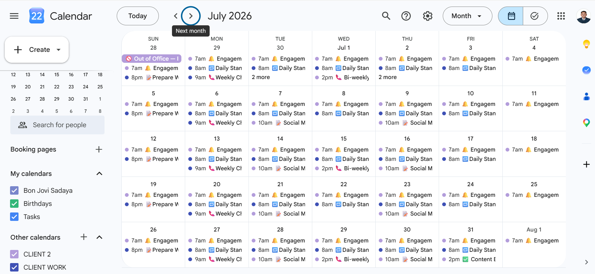
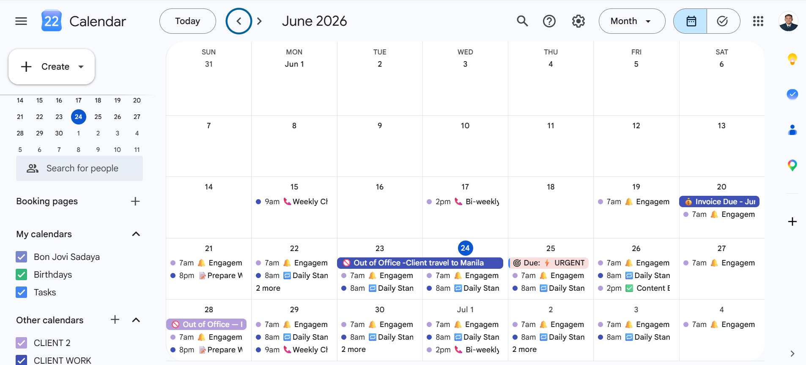
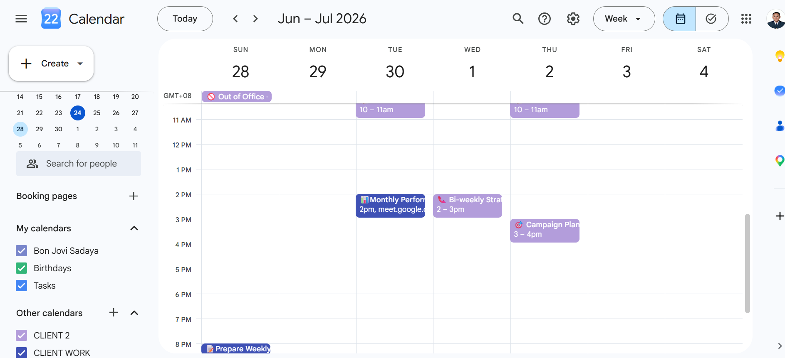

Project Detail
A structured, fully operational calendar management system built for multi-client scheduling — organizing meetings, deadlines, and recurring tasks without ever losing track of which client is which.
This project demonstrates a complete Google Calendar management system built around a real two-client VA scenario. Using Google Calendar's native tools — separate calendars, color coding, recurring events, shared access, meeting links, and task integration — a fully organized scheduling workspace was built that can scale to any number of clients without confusion.
The system was designed so each client's schedule stays visually distinct, recurring workflows run automatically, and the VA can toggle between clients in seconds — no mixing, no missed meetings, no lost deadlines.
Actual screenshots of the Google Calendar management system in action — showing the multi-client color-coded setup, recurring event patterns, Out of Office blocking, and week-view time blocking across both clients.
// july 2026 — month view · recurring events · CLIENT WORK + CLIENT 2 calendars active

// june 2026 — month view · out of office blocking · invoice deadlines · urgent flags

// week view — time-blocked meetings · bi-weekly strategy · campaign planning · google meet links

Each client gets their own dedicated calendar — color coded for instant identification. Individual events are further distinguished using emoji prefixes in the title so urgency and event type are visible at a glance, without overriding the client color.
When managing one client, the other calendar is unchecked in the sidebar — full focus, zero clutter. When a full overview is needed, both are checked and the color difference makes every event instantly identifiable.
As the client list grows, a new calendar is added per client. The structure scales without rebuilding anything.
Emoji prefixes in event titles add a second layer of meaning on top of calendar color — so the type and urgency of any event is readable without opening it.
Recurring events are the backbone of calendar management. Once set, they run automatically — no manual entry every week, no missed meetings. The system uses three recurrence patterns across both clients.
The VA manages the client's calendar through Google Calendar's sharing feature — no password required. The client shares their calendar with the VA's Google account and sets the permission level.
This is the same principle as Gmail delegation — the client stays in full control, the VA does the work, and no passwords are ever shared.
Every meeting event includes a video conferencing link directly in the event description so attendees can join with one click — no separate email needed, no hunting for links before calls.
Example event description format:
📹 Meeting Link: meet.google.com/xxx-xxxx-xxx 📋 Agenda: 1. Review last week's tasks 2. Discuss priorities 3. Set goals for next week
When a client is unavailable — travel, holiday, or personal time — the VA creates a full-day block event spanning the unavailable dates. This prevents meetings from being scheduled during that period and gives the VA immediate visibility when planning around the client's schedule.
All-day blocks appear at the top of the calendar view — immediately visible without scrolling through time slots.
Google Tasks are personal — they can't be placed on a client's calendar. The correct workflow separates what lives in the client's space from what lives in the VA's space.
Example: a Weekly Check-in Call lives on the client's calendar as an event. A reminder to Send Follow Up Email after the call lives in the VA's own task list — invisible to the client, visible to the VA.
The system follows a consistent daily workflow so no meeting is missed, no deadline is forgotten, and both clients always have an up-to-date schedule.